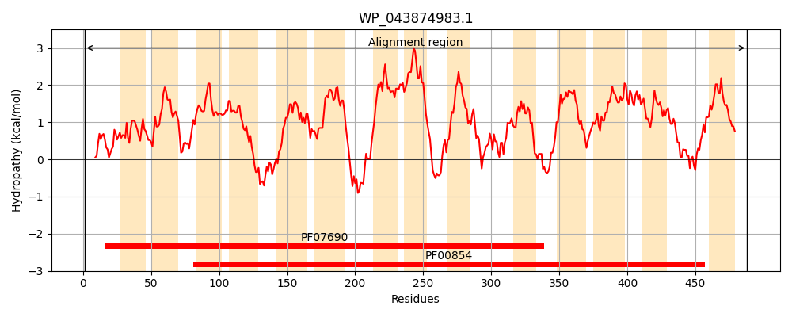
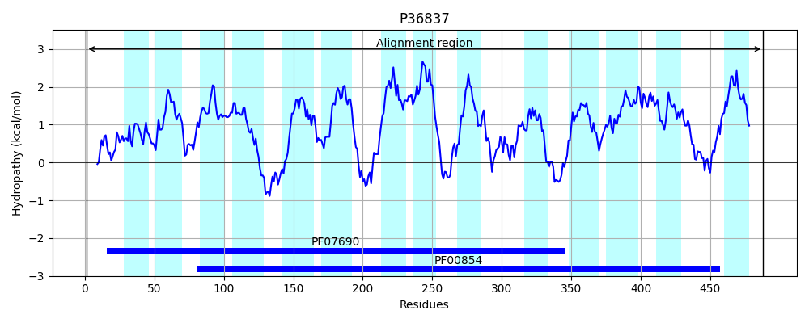
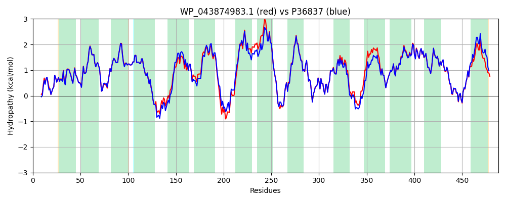

Hit Accession: P36837
Hit TCID: 2.A.17.1.3
Hit Description: gnl|BL_ORD_ID|10069 gnl|TC-DB|P36837|2.A.17.1.3 Inner membrane transporter yhiP - Escherichia coli (strain K12).
Mach Len: 488
e:0.000000
Query TMS Count : 14
Hit TMS Count: 14
TMS-Overlap Score: 14.300000
Predicted Substrates:CHEBI:5584;hydron, CHEBI:9742;tripeptide, CHEBI:4634;dipeptide
BLAST Alignment:
Score: 2269 , Bit scores: 878 bits, E-value: 0.0e+00, Alignment length: 488, Percentage identity: 89
Query: 1 MNTTAPTGLLQQPRPFFMIFFVELWERFGYYGVQGILAVFFVKQLGFSQEQAFITFGAFAALVYGLISIGGYVGDHLLGTKRTLVLGAIVLAIGYFMTGMSLLKPQLIFIALGTIAVGNGLFKANPASLLSKCYPPKDARLDGAFTLFYMSINIGSLLSLSLAPVIAEKFGYAVTYNLCGAGLIIALLVYFACRGMVKDIGSEPDHHPLSLRNLALVLAGTVVMIFLCAWLMHNVMVANLVLIVLSIVVIAFFFREAFRLDKTGRNKMFVAFILMIEAVLFYILYAQMPTSLNFFAINNVHHEILGFTINPVSFQALNPFWVVVASPVLAAIYTHLGHKGKDLTMPVKFTLGMLLCALGFLTAAAAGMWFADAQGLTSPWFIVLVYLFQSLGELLISALGLAMVAALVPQHLMGFILGMWFLTQAAAFLLGGYVATFTALPENITDPLQTLPVYTNVFSKIGLVTLGVTVVMALMVPWLNRMINTPAS 488
MNTT P G+LQQPRPFFMIFFVELWERFGYYGVQG+LAVFFVKQLGFSQEQAF+TFGAFAALVYGLISIGGYVGDHLLGTKRT+VLGA+VLAIGYFMTGMSLLKP LIFIALGTIAVGNGLFKANPASLLSKCYPPKD RLDGAFTLFYMSINIGSL++LSLAPVIA++FGY+VTYNLCGAGLIIALLVY ACRGMVKDIGSEPD P+S L VL G+VVMIF+CAWLMHNV VANLVLIVLSIVV FFR+AF+LDKTGRNKMFVAF+LM+EAV+FYILYAQMPTSLNFFAINNVHHEILGF+INPVSFQALNPFWVV+ASP+LA IYTHLG+KGKDL+MP+KFTLGM +C+LGFLTAAAAGMWFADAQGLTSPWFIVLVYLFQSLGEL ISALGLAM+AALVPQHLMGFILGMWFLTQAAAFLLGGYVATFTA+P+NITDPL+TLPVYTNVF KIGLVTLGV VVM LMVPWL RMI TP S
Sbjct: 1 MNTTTPMGMLQQPRPFFMIFFVELWERFGYYGVQGVLAVFFVKQLGFSQEQAFVTFGAFAALVYGLISIGGYVGDHLLGTKRTIVLGALVLAIGYFMTGMSLLKPDLIFIALGTIAVGNGLFKANPASLLSKCYPPKDPRLDGAFTLFYMSINIGSLIALSLAPVIADRFGYSVTYNLCGAGLIIALLVYIACRGMVKDIGSEPDFRPMSFSKLLYVLLGSVVMIFVCAWLMHNVEVANLVLIVLSIVVTIIFFRQAFKLDKTGRNKMFVAFVLMLEAVVFYILYAQMPTSLNFFAINNVHHEILGFSINPVSFQALNPFWVVLASPILAGIYTHLGNKGKDLSMPMKFTLGMFMCSLGFLTAAAAGMWFADAQGLTSPWFIVLVYLFQSLGELFISALGLAMIAALVPQHLMGFILGMWFLTQAAAFLLGGYVATFTAVPDNITDPLETLPVYTNVFGKIGLVTLGVAVVMLLMVPWLKRMIATPES 488 | Protein Hydropathy Plots: |
|---|
|  |  |
Pairwise Alignment-Hydropathy Plot:
|
|---|
|  |